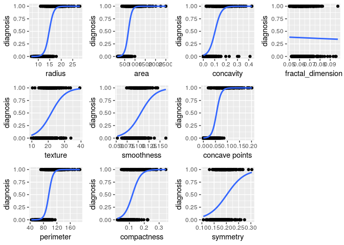
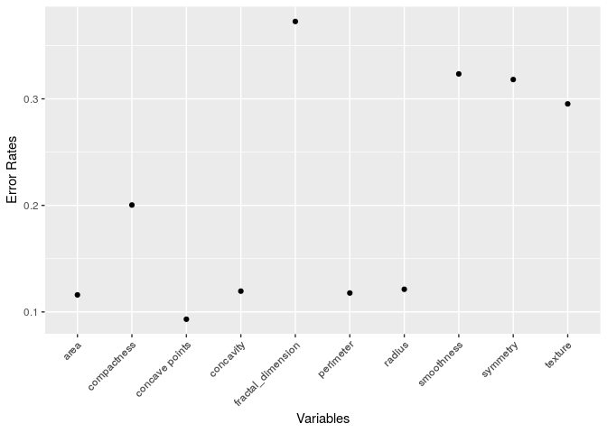

More information
Hanna Kim, Shinhae Park, and Vincent Villalobos
Last updated on 2019-05-30
##
## Attaching package: 'dplyr'## The following objects are masked from 'package:stats':
##
## filter, lag## The following objects are masked from 'package:base':
##
## intersect, setdiff, setequal, union## Registered S3 methods overwritten by 'ggplot2':
## method from
## [.quosures rlang
## c.quosures rlang
## print.quosures rlang
setwd("/cloud/project/Day5/ProjectRelated/final_project/data")
cancer<-read.csv("data.csv", header=FALSE)colnames(cancer2)<-c("id", "diagnosis", "radius", "texture",
"perimeter", "area", "smoothness", "compactness",
"concavity", "concave points",
"symmetry","fractal_dimension")
#names(cancer2)##
## B M
## 0 357 212Regression Analysis
# data cleaning
cancer2<-cancer2 %>%
mutate(
diagnosis = factor(diagnosis,
levels = c("B", "M"),
labels = c(0, 1))
)get_logit_plot= function(xval){
ggplot(cancer2,aes(x=xval,y=as.numeric(diagnosis)-1))+
geom_point()+
geom_smooth( method="glm", method.args=list(family = "binomial"), se=FALSE)+
ylab("diagnosis")
}get_error_rate=function(xval){
pred <- ifelse(predict(glm(diagnosis~xval, family = "binomial", data=cancer2),type="response")>0.5,1,0)
#table(cancer2$diagnosis,pred)
error_rate=mean(cancer2$diagnosis!=pred)
return(error_rate)
}plotlist2<-c()
j=1
for (i in names(plotlist[3:12])){
p<-plotlist[[i]]+xlab(i)
plotlist2[[j]]<-p
j=j+1
}
err<-cancer2 %>% map(get_error_rate)
j=1
Error=c()
for (i in names(err[3:12])){
Error[j]<-err[[i]]
j=j+1}
Error## [1] 0.12126538 0.29525483 0.11775044 0.11599297 0.32337434 0.20035149
## [7] 0.11950791 0.09314587 0.31810193 0.37258348
logit_mod<-glm(diagnosis~area+ `concave points`+concavity+perimeter+radius, family = "binomial", data=cancer2)
summary(logit_mod)##
## Call:
## glm(formula = diagnosis ~ area + `concave points` + concavity +
## perimeter + radius, family = "binomial", data = cancer2)
##
## Deviance Residuals:
## Min 1Q Median 3Q Max
## -2.41723 -0.24089 -0.12233 0.01557 2.65887
##
## Coefficients:
## Estimate Std. Error z value Pr(>|z|)
## (Intercept) 5.73493 7.49853 0.765 0.4444
## area 0.03341 0.01294 2.583 0.0098 **
## `concave points` 83.52433 16.93856 4.931 8.18e-07 ***
## concavity 1.56923 6.25950 0.251 0.8020
## perimeter -0.01387 0.25822 -0.054 0.9572
## radius -2.12784 2.20132 -0.967 0.3337
## ---
## Signif. codes: 0 '***' 0.001 '**' 0.01 '*' 0.05 '.' 0.1 ' ' 1
##
## (Dispersion parameter for binomial family taken to be 1)
##
## Null deviance: 751.44 on 568 degrees of freedom
## Residual deviance: 200.34 on 563 degrees of freedom
## AIC: 212.34
##
## Number of Fisher Scoring iterations: 8pred <- ifelse(predict(logit_mod,type="response")>0.5,1,0)
#table(cancer2$diagnosis,pred)
error_rate=mean(cancer2$diagnosis!=pred)
error_rate## [1] 0.07908612If the error rate is bigger than the significant value, we drop such predictor variables. For example, if we only use only 5 out of 10 variables. The error rate is about 8%.
Variable Selection
##
## Call:
## glm(formula = diagnosis ~ . - id, family = "binomial", data = cancer2)
##
## Deviance Residuals:
## Min 1Q Median 3Q Max
## -1.95590 -0.14839 -0.03943 0.00429 2.91690
##
## Coefficients:
## Estimate Std. Error z value Pr(>|z|)
## (Intercept) -7.35952 12.85259 -0.573 0.5669
## radius -2.04930 3.71588 -0.551 0.5813
## texture 0.38473 0.06454 5.961 2.5e-09 ***
## perimeter -0.07151 0.50516 -0.142 0.8874
## area 0.03980 0.01674 2.377 0.0174 *
## smoothness 76.43227 31.95492 2.392 0.0168 *
## compactness -1.46242 20.34249 -0.072 0.9427
## concavity 8.46870 8.12003 1.043 0.2970
## `concave points` 66.82176 28.52910 2.342 0.0192 *
## symmetry 16.27824 10.63059 1.531 0.1257
## fractal_dimension -68.33703 85.55666 -0.799 0.4244
## ---
## Signif. codes: 0 '***' 0.001 '**' 0.01 '*' 0.05 '.' 0.1 ' ' 1
##
## (Dispersion parameter for binomial family taken to be 1)
##
## Null deviance: 751.44 on 568 degrees of freedom
## Residual deviance: 146.13 on 558 degrees of freedom
## AIC: 168.13
##
## Number of Fisher Scoring iterations: 9pred <- ifelse(predict(fullmod,type="response")>0.5,1,0) #table(cancer2$diagnosis,pred)
error_rate=mean(cancer2$diagnosis!=pred)
error_rate## [1] 0.05096661| Df | Deviance | AIC | F value | Pr(>F) | |
|---|---|---|---|---|---|
| NA | 146.1304 | 168.1304 | NA | NA | |
| radius | 1 | 146.4368 | 166.4368 | 1.1698440 | 0.2799005 |
| texture | 1 | 195.3398 | 215.3398 | 187.9064139 | 0.0000000 |
| perimeter | 1 | 146.1504 | 166.1504 | 0.0764400 | 0.7822835 |
| area | 1 | 151.6263 | 171.6263 | 20.9861257 | 0.0000057 |
| smoothness | 1 | 152.4194 | 172.4194 | 24.0147023 | 0.0000013 |
| compactness | 1 | 146.1356 | 166.1356 | 0.0197272 | 0.8883524 |
| concavity | 1 | 147.2330 | 167.2330 | 4.2102491 | 0.0406465 |
concave points |
1 | 151.9252 | 171.9252 | 22.1275961 | 0.0000032 |
| symmetry | 1 | 148.4376 | 168.4376 | 8.8099507 | 0.0031245 |
| fractal_dimension | 1 | 146.7769 | 166.7769 | 2.4687617 | 0.1166962 |
| Df | Deviance | AIC | F value | Pr(>F) | |
|---|---|---|---|---|---|
| NA | 146.1356 | 166.1356 | NA | NA | |
| radius | 1 | 146.5220 | 164.5220 | 1.478297 | 0.2245544 |
| texture | 1 | 195.4770 | 213.4770 | 188.741557 | 0.0000000 |
| perimeter | 1 | 146.2174 | 164.2174 | 0.313023 | 0.5760552 |
| area | 1 | 151.9991 | 169.9991 | 22.429345 | 0.0000028 |
| smoothness | 1 | 152.4513 | 170.4513 | 24.158875 | 0.0000012 |
| concavity | 1 | 147.2464 | 165.2464 | 4.249072 | 0.0397336 |
concave points |
1 | 151.9338 | 169.9338 | 22.179549 | 0.0000031 |
| symmetry | 1 | 148.4631 | 166.4631 | 8.903205 | 0.0029711 |
| fractal_dimension | 1 | 147.2733 | 165.2733 | 4.352054 | 0.0374171 |
| Df | Deviance | AIC | F value | Pr(>F) | |
|---|---|---|---|---|---|
| NA | 146.2174 | 164.2174 | NA | NA | |
| radius | 1 | 150.1883 | 166.1883 | 15.208250 | 0.0001080 |
| texture | 1 | 195.9309 | 211.9309 | 190.398353 | 0.0000000 |
| area | 1 | 153.3485 | 169.3485 | 27.311559 | 0.0000002 |
| smoothness | 1 | 153.3861 | 169.3861 | 27.455427 | 0.0000002 |
| concavity | 1 | 147.2799 | 163.2799 | 4.069031 | 0.0441529 |
concave points |
1 | 152.1881 | 168.1881 | 22.867055 | 0.0000022 |
| symmetry | 1 | 148.5196 | 164.5196 | 8.817276 | 0.0031117 |
| fractal_dimension | 1 | 148.2996 | 164.2996 | 7.974566 | 0.0049128 |
##
## Call:
## glm(formula = diagnosis ~ radius + texture + area + smoothness +
## concavity + `concave points` + symmetry + fractal_dimension,
## family = "binomial", data = cancer2)
##
## Deviance Residuals:
## Min 1Q Median 3Q Max
## -1.96847 -0.15195 -0.04024 0.00409 2.93549
##
## Coefficients:
## Estimate Std. Error z value Pr(>|z|)
## (Intercept) -5.27847 10.31074 -0.512 0.60869
## radius -2.68473 1.32326 -2.029 0.04247 *
## texture 0.38262 0.06413 5.966 2.42e-09 ***
## area 0.04157 0.01554 2.675 0.00747 **
## smoothness 78.22119 30.57445 2.558 0.01052 *
## concavity 8.25689 8.04476 1.026 0.30472
## `concave points` 64.07659 26.75842 2.395 0.01664 *
## symmetry 16.02120 10.47671 1.529 0.12621
## fractal_dimension -82.21451 58.85970 -1.397 0.16248
## ---
## Signif. codes: 0 '***' 0.001 '**' 0.01 '*' 0.05 '.' 0.1 ' ' 1
##
## (Dispersion parameter for binomial family taken to be 1)
##
## Null deviance: 751.44 on 568 degrees of freedom
## Residual deviance: 146.22 on 560 degrees of freedom
## AIC: 164.22
##
## Number of Fisher Scoring iterations: 9redpred <- ifelse(predict(redmod,type="response")>0.5,1,0)
#table(cancer2$diagnosis,pred)
error_rate_red=mean(cancer2$diagnosis!=redpred)
error_rate_red## [1] 0.05272408Other Link
#probit
full_probit<-glm(diagnosis~.-id,
family = binomial(link = probit),
data=cancer2)
#complimentary log log
full_loglog<-glm(diagnosis~.-id,
family = binomial(link =cloglog ),
data=cancer2)pred_fullprobit <- ifelse(predict(full_probit,type="response")>0.5,1,0)
error_rate_fullprobit=mean(cancer2$diagnosis!=pred_fullprobit)
error_rate_fullprobit## [1] 0.05448155pred_fullloglog <- ifelse(predict(full_loglog,type="response")>0.5,1,0)
error_rate_fullloglog=mean(cancer2$diagnosis!=pred_fullloglog)
error_rate_fullloglog## [1] 0.04920914#probit
probit<-glm(diagnosis~radius+texture+area+smoothness+`concave points`+concavity+symmetry+fractal_dimension,
family = binomial(link = probit),
data=cancer2)
#complimentary log log
loglog<-glm(diagnosis~radius+texture+area+smoothness+`concave points`+concavity+symmetry+fractal_dimension,
family = binomial(link =cloglog ),
data=cancer2)pred_probit <- ifelse(predict(probit,type="response")>0.5,1,0)
error_rate_probit=mean(cancer2$diagnosis!=pred_probit)
error_rate_probit## [1] 0.05272408pred_loglog <- ifelse(predict(loglog,type="response")>0.5,1,0)
error_rate_loglog=mean(cancer2$diagnosis!=pred_loglog)
error_rate_loglog## [1] 0.05448155